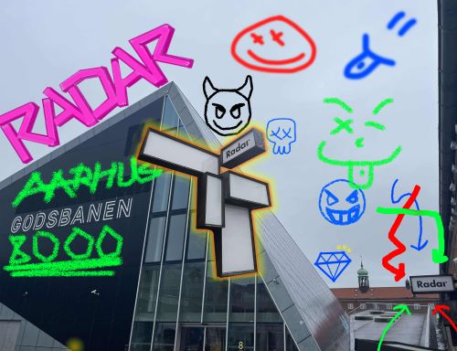

Radar har siden 2001 været et af Danmarks 19 regionale spillesteder
med tilskud til musikpræsentation og
drift fra Aarhus Kommune og Statens Kunstfond

Hvem er vi? Hvad er vores mål?
Vores mission er at gøre det lettere for alle at opdage og deltage i
unikke
kulturelle oplevelser. Vi stræber efter at skabe et fællesskab, hvor
lokale kunstnere og publikum kan mødes og udvikle sig sammen,
samtidig med
at vi støtter og fremmer Aarhus' kulturelle scene.
Vi opfordre dig til at give feedback!
Vi vil meget gerne høre din mening.
Har du deltaget til et show så kan du dele din
anmeldelse med os. Vi læser nemlig alle anmeldelser
grundigt og tager dem seriøst. Din feedback er vigtig
for os, især når vi arbejder på at skabe endnu bedre
oplevelser i fremtiden.
Lene Ethelberg Jensen
Titel: Administrativ medarbejder
Opgaver: Administration vedr. artister, honorar, KODA, løn og
spillestedsindtjening. lene@radarlive.dk
Hans Boisen Mark
Titel: Baransvarlig og frivilligkoordinator
Opgaver: Frivilligkoordinering, bardrift, indkøb, lager,
koncertafvikling hans@radarlive.dk
Radar er et spillested, hvor vi værdsætter diversitet, fællesskab og
ikke mindst musikken. Året rundt arbejder cirka 45 medarbejder for at
arrangere og formidle livemusikken.
Heraf er de ca. 38 medarbejdere frivillige. På Radar er de frivillige en
vigtig medarbejdergruppe, fordi det ganske enkelt ikke ville kunne lade
sig gøre at afvikle koncerter uden denne gruppe.
De
frivillige arbejder inden for områderne bar, entre, garderobe, foto, lys
og afvikling. Desuden arbejder frivilliggruppen med forskellige ad hoc
opgaver, der måtte opstå henover året. De frivillige er tilknyttet et
bestemt arbejdsområde, og hver måned bliver der lavet vagtplaner.
Du skal være minimum 20 år for at blive frivillig på Radar.
Desuden forventes det, at du har en interesse for kulturområdet, har
gode samarbejdsevner, engagement i Radars virke og altid er
imødekommende over for publikum og musikere.
Radar har
forskellige medarbejdergoder for de frivillige, så som gratis adgang til
alle Radars koncerter, billige priser i baren, mulighed for at få venner
og familie skrevet på gæstelisten og gæstelisterpladser hos vores
kolleger på Train. Desuden holder vi flere sociale arrangementer hen
over året for alle medarbejdere på Radar
Forsalg: Når der er forsalg, kan billetter købes via denne hjemmeside.
Find link til billetkøb under det enkelte arrangement. Hvis der ikke er
udsolgt i forsalg, sælges billetter ved indgangen.
Gebyr: Vi oplyser altid billetpris inkl. gebyr (oftest 15 kr.).
Prisen er den samme i forsalg og ved indgangen, med mindre andet er
oplyst. Købte billetter refunderes som udgangspunkt kun i tilfælde
af aflysning.
Aflysning: I tilfælde af koncertaflysning refunderes billetter købt på
internettet automatisk hos forsalgsudbyder.
Billetter købt ved fysisk salg refunderes på salgsstedet. For begge
billettyper gælder, at gebyr ikke refunderes.
Handicapadgang: Radar er indrettet efter nutidige krav til
handicapadgang. Handicaphjælpere har gratis adgang ved fremvisning af
ledsagerkort.
UDLEJNING TIL VIRKSOMHEDER/ORGANISATIONER
Virksomheder, uddannelsesinstitutioner, foreninger og andre kan leje
Radars sal til både lukkede og åbne arrangementer.
Radar ligger meget centralt i Aarhus, kun 10 minutters gang fra
banegården, og med masser af p-pladser lige ude foran.
Radars sal kan bruges til showcases, releasefester, lyd- og
videooptagelser, foredrag, netværksarrangementer, modeshows, private
firmaarrangementer, filmfremvisning og meget mere…..
Radars
lokaler består af entre med garderobe, publikumstoiletter, bar og
koncertsal. Kapaciteten er 300 stående eller max 100 siddende (i
biografopsætning). Radar er indrettet efter nutidige krav til
handicapadgang. Du kan få et overblik over Radars rum HER (åbner
Matterport.com i seperat vindue).
Med i lejeprisen er brug af alle Radars faciliteter, inkl. lyd- og
lysudstyr, lærred og projektor og bemanding med fast tekniker og
barpersonale og slutrengøring. Der er meget begrænsede
køkkenfaciliteter, så tilberedning af varm mad er ikke muligt.
Kontakt: Ønsker du yderligere oplysninger, forhøre dig om
priser eller måske få en rundvisning så kontakt spillestedsleder Martin
Aagaard på 5070 1673 // kontakt(a)radarlive.dk
CAPACITY 300 standing guests / 300 stående gæster. Get a visual overview
of Radar HERE (will open Matterport.com in new window).
POWER
1 x (3x32A) 5 pin 50 Hz CEE HPFI, available for visitors 1 x (3x16A) 5
pin 50 Hz CEE HPFI, available for visitors 2 x (1x10A) 3 pin 50 Hz CEE
HPFI, for backline 1 x (3X16A) 5 pin 50 Hz CEE HPFI, for buspower
(landline outside building)
STAGE
Dimension (the stage is flexible in size - read more) Width: 6 m Depth:
4,5 m Height: 0,6 m Stage clearence: 3,20 m (from stage til truss)
PIANO
KAWAI CX 5 / 1870045 (please notify us at least two weeks before if you
want to use the piano) Upright piano can not be used in 360 degree stage
setup.
DJ
2 x TECHNICS SL-1210 MK2 with ORTOFON OM PRO 1 x PIONEER DJM 250 MK2 DJ
Mixer 1 x DENON, DN-2600 F
Michala Mellson (næstforperson)
(projektkoordinator, Horsens Kulturafdeling)
- Udpeget af SPOT Festival
Henrik Munch
(komponist og lektor, Det Jyske Musikkonservatorium)
- Udpeget af DIEM v/ Det Jyske Musikonservatorium
Hanne Møberg-Cooper
(Adjunkt v. uddannelser inden for service, markedsføring og
entreprenørskab, Erhvervsakademi Aarhus)
- Udpeget af Erhvervsakademi Aarhus
Stine Snede Villumsen
(International koordinator og vejleder, SOSU, Aarhus)
- Udpeget af Musikudvalget v/ Aarhus Kommune
DANSK LIVE www.dansklive.dk
Interesseorganisationen for spillesteder og festivaler i DK.
ÅRHUS KOMMUNE
www.aarhus.dk/kommune
Yder tilskud til Radars drift.
STATENS KUNSTFOND
www.kunst.dk/musik
Yder tilskud til Radars drift.
GODSBANEN
www.godsbanen.dk
Kulturproduktionscentret som Radar er beliggende i, sammen med en lang
række andre kultur- og kunstaktører og spændende samarbejdspartnere.
INSTITUT FOR X
www.institutforx.dk
Beliggende på Godsbaneområdet og nabo til Radar.
SPISELAUGET
www.spiselauget.dk
Restaurant beliggende på Godsbanen og nabo til Radar.
TUBORG
www.tuborg.dk
Partner og leverandør.
TUBORGFONDET
www.tuborgfondet.dk
Tuborgfondet har gennem årene ved flere lejligheder bidraget med støtte
til tekniske nyanskaffelser.
TRAIN
www.train.dk
Regionalt Spillested i Århus, sammen med Fonden Voxhall og Radar.
FONDEN VOXHALL
www.fondenvoxhall.dk
Regionalt Spillested i Århus sammen med Train og Radar.
ROSA
www.rosa.org
Genreorganisation og samarbejdspartner.
MONO
www.mono.dk
Lokal musikforening. Huser bl.a. øvelokaler og studiefaciliteter i huset
MONORAMA, og arrangerer koncerter.
CAVI
www.cavi.au.dk
Centre for Advanced Visualization and Interaction. Samarbejdspartner på
bl.a. Radars AUDIO CANVAS.
PIANOKOMPAGNIET
www.pianokompagniet.dk
Stemmer og vedligeholder Radars klaver.
Radar har siden 2001 været et af Danmarks 19 regionale spillesteder, med
tilskud til musikpræsentation og drift fra Aarhus Kommune og Statens
Kunstfond. Publikumskapacitet er 300 stående gæster (mindre v.
møblering). Radar afholder cirka 120 arrangementer om året.
Fra 2025 har Radar ikke fået bevilling til at fortsætte som
regionalt spillested, og der arbejdes derfor på en alternativ løsning,
der forhåbentlig gør, at Radar kan fortsætte det store arbejde med at
støtte og underbygge vækstlaget, samt de eksperimenterende og nichede
genrer.
Radar er det tidligere Musikcaféen, der afholdt sin sidste koncert i
Mejlgade 53 den 10. december 2011. Spillestedet er fortsat i samme ånd
under det nye navn på Godsbanen i Aarhus.
Der er fire fastansatte på kontoret, en tekniker og to baransvarlige.
Derudover arbejder der omkring 35 frivillige inden for bar, entré,
garderobe, afvikling, teknik og foto.
Spillestedet er
organiseret som en selvejende institution med bestyrelse.
Radars tidligere lokaler i Mejlgade 53 har været brugt til
spillestedsdrift siden 1978. Fra midtfirserne er udviklingen gået fra
primært amatørscene og undergrundsklub til en differentieret
professionel scene. Historisk har spillestedet indtaget en central rolle
som scene for de nyeste musikalske tendenser i Aarhus, og har været
startscene for mange af de navne, der nu betræder de største scener.
Læs
RADAR MANUAL
og se hvilke muligheder du som musiker har på Radar.
Radar er indrettet efter alle nutidige krav til handicapadgang. Der er
niveaufri adgang til alle områder på Radar, og der er ét
handicaptoilet.
Ved køb af handicapbillet har ledsager gratis adgang mod fremvisning af
ledsagerkort. Har du spørgsmål inden dit besøg på Radar, er du meget
velkommen til at ringe på 86 76 03 44.
Vi opfordrer vores gæster til at benytte sig af offentlig transport.
Radar ligger 10-15 minutters gang fra Aarhus Banegård, og flere bybusser
og rutebiler stopper på Thorvaldsensgade, der ligger fem minutters gang
fra Radar.
Skulle du være forhindret i at tage offentlig
transport, så findes der parkeringspladser langs Godsbanen, hvor Radar
ligger.
HUSK parkeringsbillet! P-vagterne har et skarpt øje på området.
Befinder du dig foran Godsbanen, og skal ind i vores koncertsal, så skal
du følge den røde pil på kortet ovenfor. Så ankommer du til Radars
indgang. Radars kontorindgang befinder sig på den anden side af
bygningen.